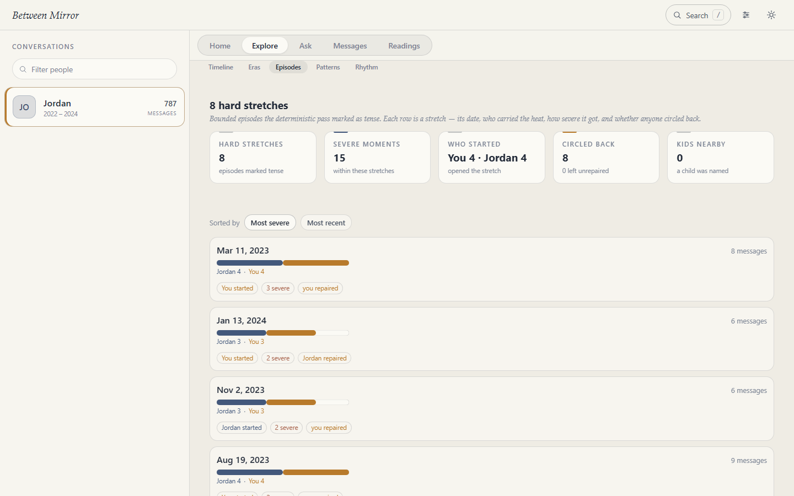
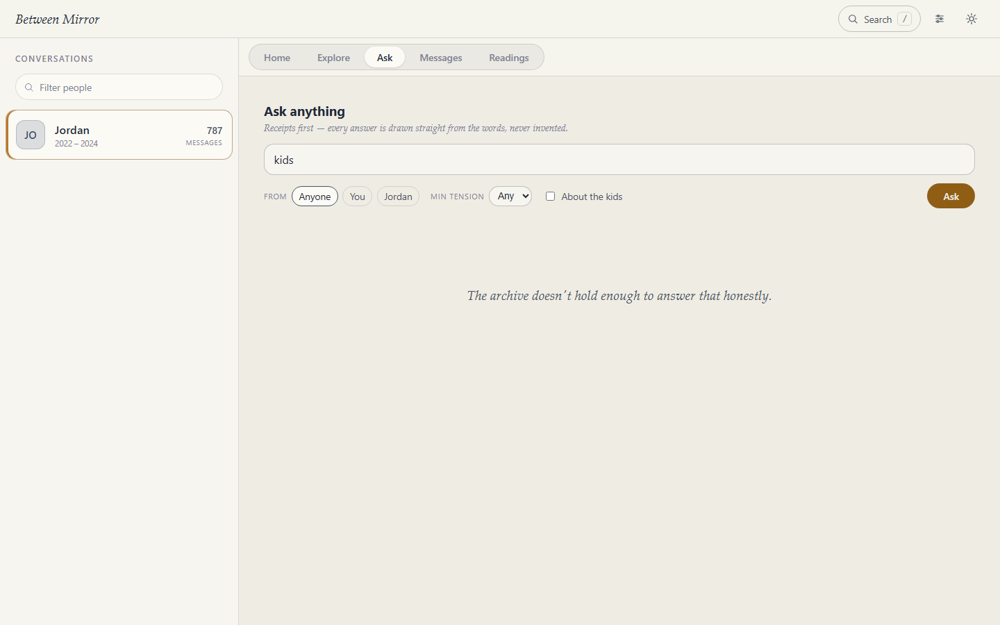

Meet Alex & Jordan
They are invented. Twenty-six months of made-up messages — a warm start, the ordinary friction of moving in together, and the repair that follows most fights. A normal, hard, loving relationship, written so you can see exactly what this tool does and doesn't do before trusting it with your own years.
Between Mirror never hosts anyone's archive. Not theirs, not yours, not for a demo. Alex and Jordan exist because the alternative — showing you a real couple's messages — is the exact thing this project refuses to do.
Run it yourself, in two commands
The demo ships with the source. It opens the whole instrument on the fictional archive:
git clone https://github.com/between-mirror/between.git
cd between && npm install
npm run demo:serve # → http://localhost:5273
Node 22 or newer. Your own between.db is never touched — the demo runs from its own
database file.
Or click through it right now
That is the actual application — the same code, the same views — reading a frozen copy of Alex & Jordan's archive. It runs entirely in your browser: it loads a set of pre-computed JSON files from this site and talks to nothing else, which is asserted by a test in the build rather than promised here.
Two honest limits. Everything that would change something — importing, labelling, freezing a reading, exporting, deleting — is turned off, because there is nothing of yours to change. And Ask offers a few prepared questions rather than a text box, since answering a new one needs a language model and a real archive. Both say so when you touch them.



